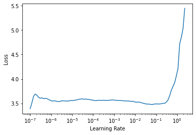

dls = get_data(URLs.IMAGENETTE_160, 160, 128)A new version of this dataset is available, downloading...File downloaded is broken. Remove /root/.fastai/archive/imagenette2-160.tgz and try again.In this article we will look at methods to improve gradient decent optimisation for training neural networks beyond SGD. These include momentum, RMSProp and Adam. We will also look at the fastai library system of callbacks which make changes to the training loop easier.
This article is based on content from the fastai deep learning course, chapter 16.
We will first define a baseline using basic SGD to compare how further enhancements improve results. We will use the fastai curated imagenette dataset here.
dls = get_data(URLs.IMAGENETTE_160, 160, 128)A new version of this dataset is available, downloading...File downloaded is broken. Remove /root/.fastai/archive/imagenette2-160.tgz and try again.We will also create an untrained ResNet-34 architecture for our model which we will train from scratch.
def get_learner(**kwargs):
return cnn_learner(dls, resnet34, pretrained=False,
metrics=accuracy, **kwargs).to_fp16()
learn = get_learner()
learn.fit_one_cycle(3, 0.003)| epoch | train_loss | valid_loss | accuracy | time |
|---|---|---|---|---|
| 0 | 2.611032 | 1.885956 | 0.362293 | 00:26 |
| 1 | 1.987230 | 1.666735 | 0.449172 | 00:26 |
| 2 | 1.615224 | 1.509878 | 0.567134 | 00:26 |
That was with all the default settings used by fastai. Lets explicitly use just basic SGD.
learn = get_learner(opt_func=SGD)
learn.lr_find()SuggestedLRs(lr_min=0.005754399299621582, lr_steep=6.309573450380412e-07)
So we will need to use a higher learning rate than we normally use. We will also need to explictly turn momentum off, as we are here trying to illustrate just using basic SGD.
learn.fit_one_cycle(3, 0.03, moms=(0,0,0))| epoch | train_loss | valid_loss | accuracy | time |
|---|---|---|---|---|
| 0 | 2.869628 | 2.315048 | 0.284586 | 00:25 |
| 1 | 2.269993 | 1.699830 | 0.414522 | 00:25 |
| 2 | 1.978710 | 1.616934 | 0.444841 | 00:25 |
The fastai library provides a flexible approach to optimisers that makes it easier to add custom changes using optimiser callbacks. A key part of this is the Optimiser class which includes these two methods.
def zero_grad(self):
for p,*_ in self.all_params():
p.grad.detach_()
p.grad.zero_()
def step(self):
for p,pg,state,hyper in self.all_params():
for cb in self.cbs:
state = _update(state, cb(p, **{**state, **hyper}))
self.state[p] = statezero_grad is handy for clearing all the gradients. Note the step method loops through other potential callbacks which is how different aspects of optimisation old and new are done. Even basic SGD is one of these callbacks.
def sgd_cb(p, lr, **kwargs): p.data.add_(-lr, p.grad.data)We can add this as a callback like this.
opt_func = partial(Optimizer, cbs=[sgd_cb])Let’s now train with this.
learn = get_learner(opt_func=opt_func)
learn.fit(3, 0.03)| epoch | train_loss | valid_loss | accuracy | time |
|---|---|---|---|---|
| 0 | 2.663601 | 1.871811 | 0.344968 | 00:25 |
| 1 | 2.256670 | 1.914813 | 0.354650 | 00:25 |
| 2 | 1.995262 | 1.813828 | 0.442548 | 00:25 |
So the idea of Momentum is we want to go faster in the direction we are going with gradient decent to get there sooner. We could for example use a moving average.
weight.avg = beta * weight.avg + (1-beta) * weight.grad
new_weight = weight - lr * weight.avg
beta helps control how much momentum to use, so if its zero there is no momentum and we have just basic SGD. But if closer to 1 then the main direction is the average of the previous steps.
High beta can help us get over small ‘bumps’ in the loss landscape and keep going faster in the general direction of progress followed so far, but if too high can cause us to overshoot completly.
Beta too high means we really miss important changes in direction.
fit_one_cycle starts with a high beta of 0.95, going down to 0.85 then back up to 0.95.
Let’s add momentum, by keeping track of the moving average gradient, which we can do with another callback.
def average_grad(p, mom, grad_avg=None, **kwargs):
if grad_avg is None: grad_avg = torch.zeros_like(p.grad.data)
return {'grad_avg': grad_avg*mom + p.grad.data}
def momentum_step(p, lr, grad_avg, **kwargs): p.data.add_(-lr, grad_avg)
opt_func = partial(Optimizer, cbs=[average_grad,momentum_step], mom=0.9)Note Learner will automatically schedule the momentum and learning rate mom and lr, so fit_one_cycle will even work with our custom Optimiser.
learn = get_learner(opt_func=opt_func)
learn.fit_one_cycle(3, 0.03)| epoch | train_loss | valid_loss | accuracy | time |
|---|---|---|---|---|
| 0 | 2.744289 | 2.736736 | 0.278471 | 00:25 |
| 1 | 2.402794 | 1.715736 | 0.425732 | 00:25 |
| 2 | 2.038843 | 1.557327 | 0.485096 | 00:25 |
learn.recorder.plot_sched()RMSProp uses an adaptive learning rate, each parameter gets its own learning rate controlled by a global learning rate. The individual learning rate can be determined by looking at the gradients, for example if the gradients are close to zero for a while it might need a higher learning rate, and vice versa if the gradients are too high or unstable.
We can use a moving average to get the general direction, specifically a moving average of the gradients squared.
w.square_avg = alpha * w.square_avg + (1-alpha) * (w.grad ** 2)
new_w = w - lr * w.grad / math.sqrt(w.square_avg + eps)
The eps (epsilon) is added for numerical stability (usually set at 1e-8), and the default value for alpha is usually 0.99.
def average_sqr_grad(p, sqr_mom, sqr_avg=None, **kwargs):
if sqr_avg is None: sqr_avg = torch.zeros_like(p.grad.data)
return {'sqr_avg': sqr_mom*sqr_avg + (1-sqr_mom)*p.grad.data**2}
def rms_prop_step(p, lr, sqr_avg, eps, grad_avg=None, **kwargs):
denom = sqr_avg.sqrt().add_(eps)
p.data.addcdiv_(-lr, p.grad, denom)
opt_func = partial(Optimizer, cbs=[average_sqr_grad,rms_prop_step],
sqr_mom=0.99, eps=1e-7)
learn = get_learner(opt_func=opt_func)
learn.fit_one_cycle(3, 0.003)| epoch | train_loss | valid_loss | accuracy | time |
|---|---|---|---|---|
| 0 | 2.810043 | nan | 0.108535 | 00:26 |
| 1 | 2.242717 | 1.917789 | 0.354140 | 00:26 |
| 2 | 1.790359 | 1.510692 | 0.496815 | 00:26 |
Adam combines SGD, momentum and RMSProp together. One difference is Adam uses an unbiased moving average.
w.avg = beta * w.avg + (1-beta) * w.grad
unbias_avg = w.avg / (1 - (beta**(i+1)))
With all the steps combined we have:
w.avg = beta1 * w.avg + (1-beta1) * w.grad
unbias_avg = w.avg / (1 - (beta1**(i+1)))
w.sqr_avg = beta2 * w.sqr_avg + (1-beta2) * (w.grad ** 2)
new_w = w - lr * unbias_avg / sqrt(w.sqr_avg + eps)
Adam is the default optimiser in fastai.
When using Adam, we need to use a different kind of weight decay. Recall basic weight decay.
new_weight = weight - lrweight.grad - lrwd*weight
And alternative formulation is:
weight.grad += wd*weight
With SGD these are the same, but not for Adam. So we need to use decoupled weight decay when using Adam.
Fastai callbacks allow you to add custom behaviour to the training loop at any point.

This has enabled easier adding of many new custom changes such as the below examples.

Let’s try defining a model reset callback.
class ModelResetter(Callback):
def begin_train(self): self.model.reset()
def begin_validate(self): self.model.reset()Here is another example RNN regulariser callback.
class RNNRegularizer(Callback):
def __init__(self, alpha=0., beta=0.): self.alpha,self.beta = alpha,beta
def after_pred(self):
self.raw_out,self.out = self.pred[1],self.pred[2]
self.learn.pred = self.pred[0]
def after_loss(self):
if not self.training: return
if self.alpha != 0.:
self.learn.loss += self.alpha * self.out[-1].float().pow(2).mean()
if self.beta != 0.:
h = self.raw_out[-1]
if len(h)>1:
self.learn.loss += self.beta * (h[:,1:] - h[:,:-1]
).float().pow(2).mean()Inside the callback you can access global variables and objects such as self.model.
Callbacks can also interrupt any part of the training loop by using a system of exceptions, for example to skip a batch or stop training completely.
This callback will stop training any time the loss becomes infinate.
class TerminateOnNaNCallback(Callback):
run_before=Recorder
def after_batch(self):
if torch.isinf(self.loss) or torch.isnan(self.loss):
raise CancelFitExceptionSometimes callbacks need to be called in a particular order. You can use run_before or run_after in the callback to set the ordering needed.
In this article we looked at standard SGD enhacements for optimisation, as well as looking at the fastai’s library callbacks that help make changes easier.